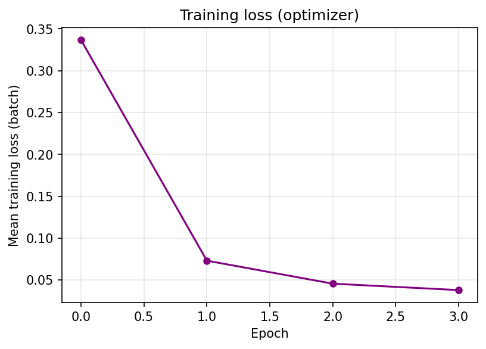
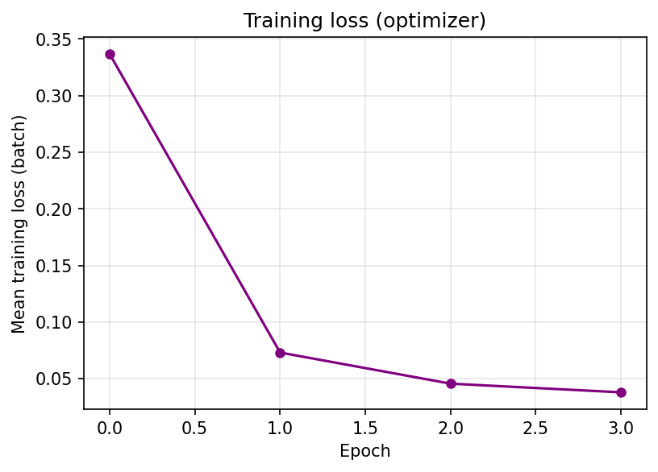
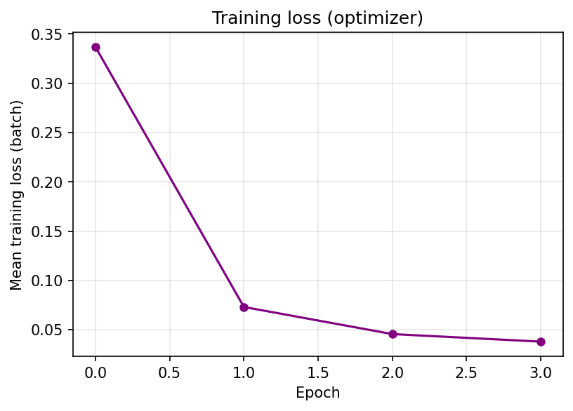

Training curves

 

User-friendly summary of the MACE training run on the liquid water dataset (BingqingCheng/ab-initio-thermodynamics-of-water).
Initial — MAE E/atom: 2.62 meV, MAE F: 28.02 meV/Å
After epoch 0 — MAE E/atom: 32.84 meV, MAE F: 7.75 meV/Å

One snapshot of liquid water from the training set. Red = oxygen, blue = hydrogen.

Rotate and zoom in your browser. Red = oxygen (O), light blue = hydrogen (H).